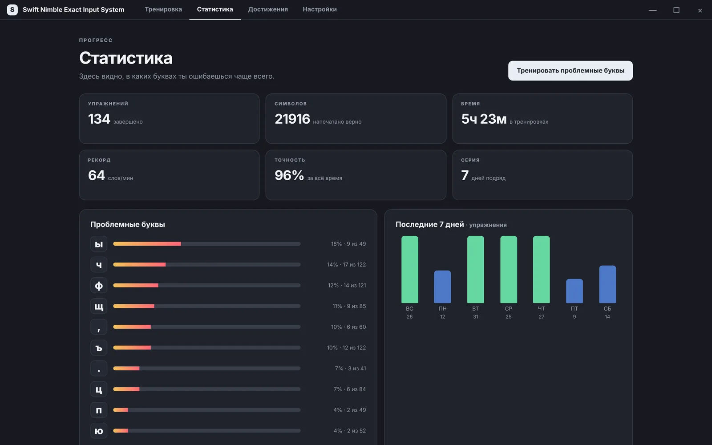

Приложение знает, где вы ошибаетесь
Каждое нажатие записывается по буквам. Те, где вы промахиваетесь чаще всего, получают красную точку на клавиатуре и попадают в список «Проблемные буквы» с процентом ошибок.
Одна кнопка запускает упражнение из слов, в которых эти буквы встречаются особенно часто. Через пару занятий список слабых мест начинает сокращаться.
